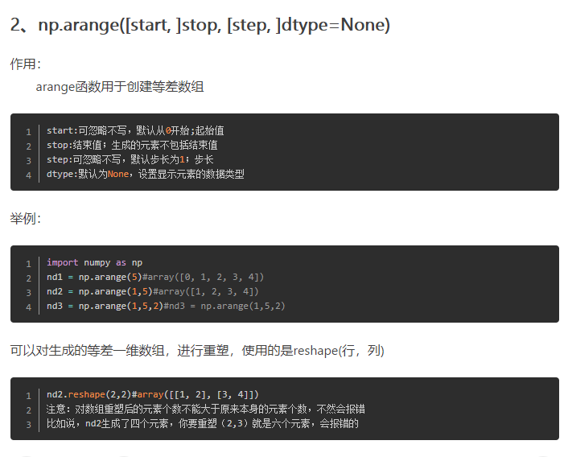

最近用numpy比较多，边用边自己总结用法。
1. 数组
1.1 生成 m行 * n列 的随机数组
import numpy as np
# 生成 m行*n列 的随机数组
# np.random.random((m, n))
# 生成一个3行2列的随机数组，想让它看起来大一点，在后面乘50
print(np.random.random((3, 2)) * 50)1.2 生成一组随机样本点，样本点的个数为n
np.random.rand(n)示例：
>>> np.random.rand(10) # 生成一个有10个样本点的随机数组
array([0.8769499 , 0.70305017, 0.23591552, 0.6060884 , 0.33132381,
0.37187465, 0.31462118, 0.54622967, 0.25750118, 0.42270614])1.3 array.shape:返回数组的行列数
# 生成一个两行三列的数组
array1 = np.random.random((2, 3))
# 输出数组的行列数
print(array1.shape)输出：
(2, 3)
1.4
np.float32()和np.float64的区别
数位的区别，一个在内存中占分别32和64个bits，也就是4bytes或8bytes
数位越高浮点数的精度越高
1.5 np.hstack(tuple)：将数组沿水平方向堆叠
def func1():
arr1 = np.array([[1, 2, 3], [4, 5, 6]])
arr2 = np.array([[1, 2, 3], [4, 5, 6]])
# print(arr1.shape)
new_arr = np.hstack((arr1, arr2))
print(new_arr.shape)
print(new_arr)
return
if __name__ == '__main__':
func1()结果：
(2, 3)
(2, 6)
[[1 2 3 1 2 3]
[4 5 6 4 5 6]]
1.6 np.random.shuffle(arr)：将数组打乱顺序（只打乱最外层）
def func2():
arr = np.arange(10)
print(arr)
np.random.shuffle(arr)
print(arr)
return
if __name__ == '__main__':
func2()结果：
[0 1 2 3 4 5 6 7 8 9]
[3 9 0 5 6 1 8 4 7 2]
1.7 np.arange
